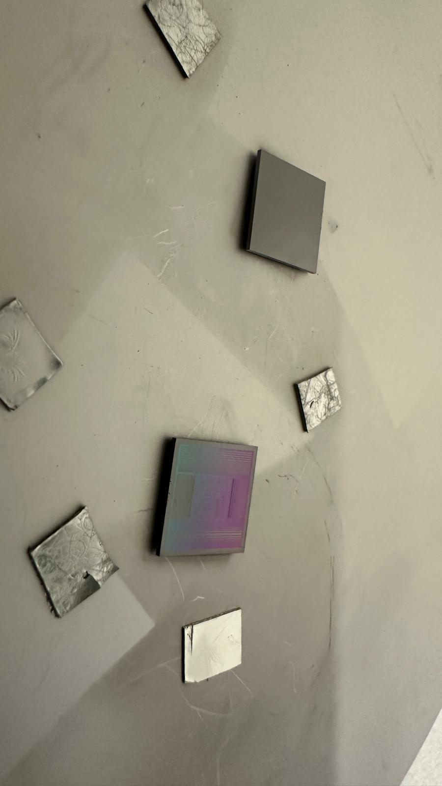
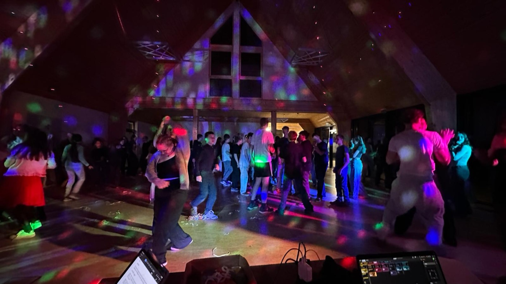
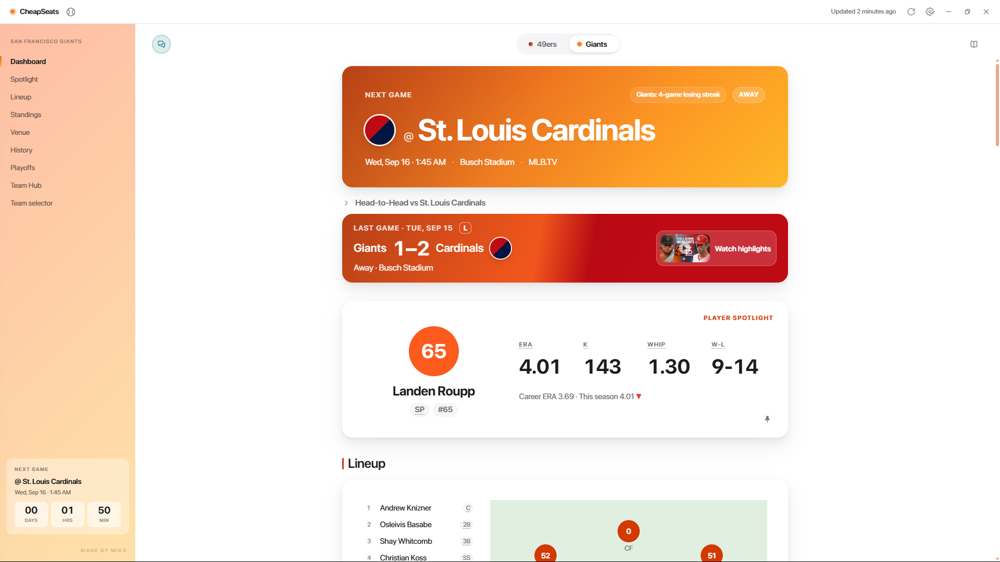
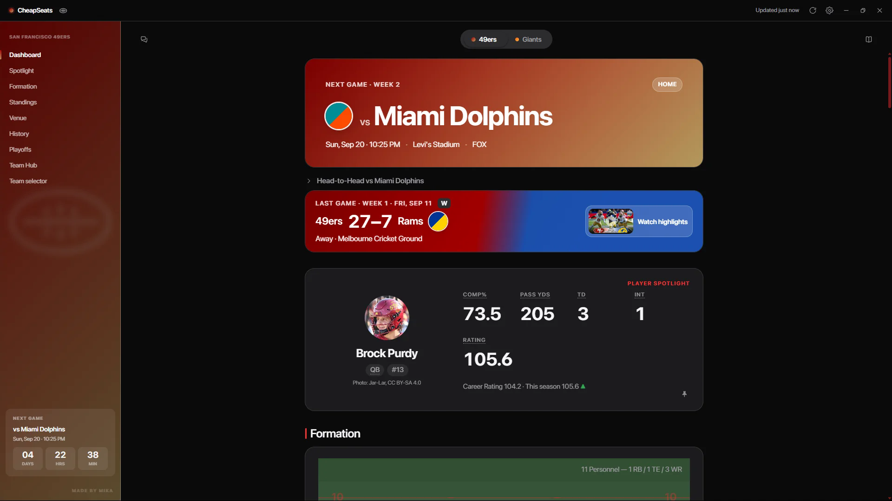

Materials Science · B.Sc.
Measurement, sensors, thin films & NDT.

DGZfP · 2025

Sputter deposition

Profilometry


Thin-film research
Down at the small scale
Seebeck coefficient · Ag · 100 nm thin film
★DGZfP Science Student Award 2025
Open to
A working-student role alongside the Master
RoleWorking student, from November 2026
FieldsMeasurement · sensors · thin films · NDT

Youth work

Confirmation group


Volunteering
Engagement that matters to me
THW · helpline · youth work



Project
CheapSeats
A desktop & mobile scoreboard for any NFL or MLB club.
Tauri 2 · Rust
React 19 · TS
Vite 7
Mika Jeske
Let's build something measurable.